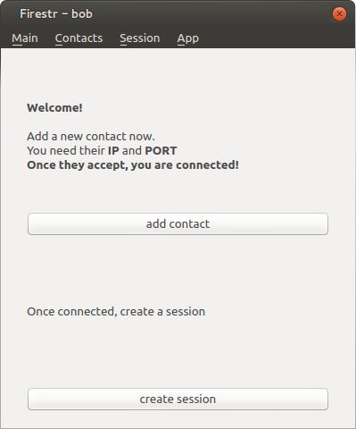
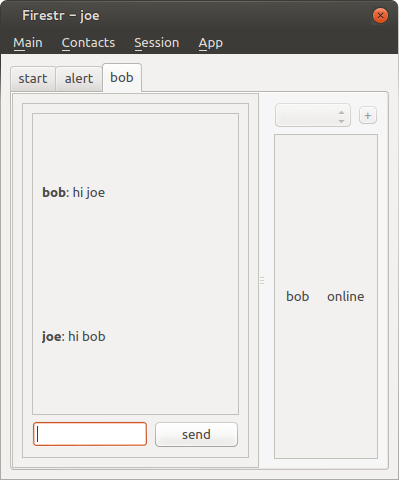
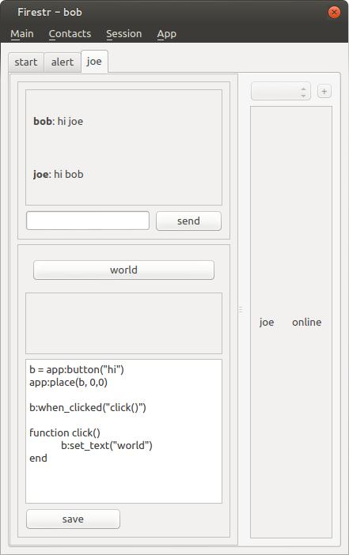
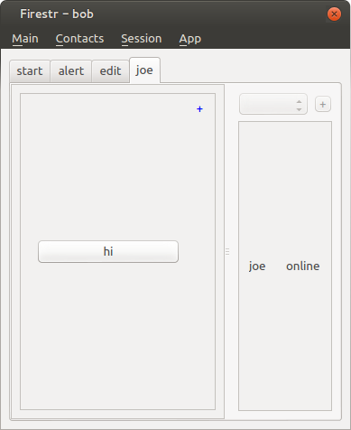
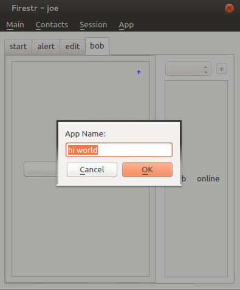

Firestr v0.1darcs get http://mempko.dyndns.org/darcs/firestrFirestr v0.1git clone http://github.com/mempko/firestr.gitP2P Living SoftwareA distributed way to communicate through running software. Communicate and share using interactive media. Provides a simple application platform for developing p2p applications and share these applications with others in a chat like UI. I want this to revolutionize sharing software and teaching children how to program. |
|||
WelcomeHere is the main window of FirestrYou can add contacts and start a session |
 | ||
|  |
Hi JoeOut of the box Firestr supports simple p2p text chatOn the left you see bob talking to joe. The communication happens only between peers. A server called a greeter is used only initiate the p2p connection. |
||
Distributed Code EditingFirestr has a built in distributed code editor.You can write software with a friend and save it. The application runs as you code it. Lua is the first language that is supported, but others are planned in the future. Notice that the UI is modelled after a chat program. You see the original chat message above the code editing message. If you run another App in the session, it would appear below the code editor. |
 | ||
Distributing SoftwareBelow bob sent joe his new application.Joe liked it so much he clicked the plus on the top right and saved the application to his collection. Joe can then immediately open up the code editor and make any changes he likes. Even if you don't write software, you can simply collect apps your friends send. Once an App is in your collection, you can send it to others. |
|||
|  |  | ||
|
The bonus is the software that is written is automatically connected. There is
no need to worry about network programming to write software that works together
across the network. There is a simple API to send messages that the other
instances can capture and act upon.
|
|||
Only BeginningWhat motivated me to make Firestr? My son was born and I was not satisfied with the state of software development for children. I was also dissatisfied with the web as a telecommunication platform.Firestr's goal is two fold. To make distributed communication and computation simple, and to make it easy for children to learn software and share it with their friends. And another benefit is that it works on a trust system. You never connect to someone you do not know, and therefore you never infest your system with software that is malicious. My next goal for this system is to make it encrypted. I want the communication to always be safe, and unencrypted communication will not be allowed. Please join me, download the code and send patches to firstr.dev@gmail.com :darcs get http://mempko.dyndns.org/darcs/firestr |
|||
|
All code is in a Darcs 2.8 repository |
|||